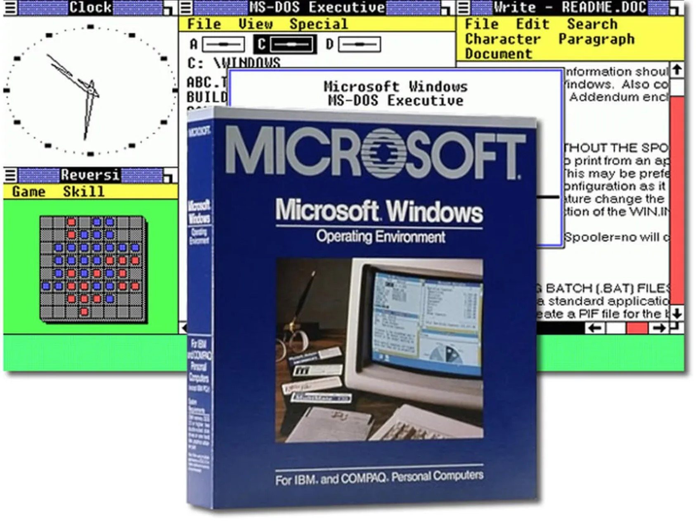

Windows 1.0 ra mắt vào năm 1985, đánh dấu bước đi đầu tiên của Microsoft trong lĩnh vực hệ điều hành giao diện đồ họa. Mặc dù không đạt được thành công lớn, nhưng đây chính là nền móng để tạo nên hệ điều hành phổ biến nhất thế giới ngày nay.
Sự phát triển không ngừng từ Windows 95, XP, 7 cho đến Windows 10 và 11 đã chứng minh tầm quan trọng của Windows 1.0 trong lịch sử công nghệ.
Hãy cùng nhìn lại hành trình 40 năm đầy thăng trầm của hệ điều hành này.
Apple Lisa: Phát súng bắt đầu cuộc đua thay đổi hệ điều hành máy tính

Vào đầu những năm 1980, hệ điều hành máy tính không hề giống với những gì chúng ta biết hiện nay. Chúng hoạt động dựa trên các dòng lệnh, sử dụng thông qua cách nhập lệnh văn bản. Tuy nhiên, một cuộc cách mạng GUI (giao diện đồ họa người dùng) đang diễn ra trong ngành công nghệ. Apple đã tự đặt mình vào vị trí dẫn đầu trong cuộc cách mạng đó khi cho ra mắt Lisa vào đầu năm 1983. Đó là một trong những chiếc PC đầu tiên có giao diện người dùng đồ họa, cho phép người dùng mở các chương trình và tập tin bằng chuột. Tuy nhiên, vấn đề với Apple Lisa là nó quá cao cấp. Đó là chiếc máy tính đi trước thời đại với thông số kỹ thuật rất cao đối với một chiếc PC đầu những năm 1980. Điều này khiến Lisa trở nên cực kỳ đắt đỏ, với giá khởi điểm xấp xỉ 10.000 USD. Hầu hết người dùng sẽ chọn PC IBM rẻ hơn.
Microsoft ra mắt Windows 1.0 tại COMDEX
Tuy nhiên, Lisa vẫn khiến nhiều người trong ngành công nghệ phải chú ý nhờ hệ điều hành giao diện đồ họa mang tính cách mạng (tiền thân của Macintosh). Để đáp lại Lisa, Microsoft đã bắt đầu dự án hệ điều hành GUI có tên mã là Interface Manager (Trình quản lý giao diện). Bill Gates công bố Windows 1.0 tại khách sạn Plaza ở New York vào ngày 10 tháng 11 năm 1983.